DEFORM ® 2D includes special features to simulate uniform rotation and distortion about the Z axis. The torsional distortion mode uses a different element formulation, which considers out-of-plane shear strains (r,q and z,q) as well as the 3 normal + rz shear strains that are considered in a normal axisymmetric problem.
This lab demonstrates setting up inertia welding simulation in DEFORM® 2D.
1.3. Defining Simulation Controls
1.4. Loading Material into Material list
1.5. Adding Object for inertia welding
1.12. Defining Step Controls and expert Simulation controls
On a Windows machine, go to the  button select DEFORM-v1x.xxx (.xxx indicates version number E.g. v14.0.2) and select DEFORM GUI Main v1x.x from the menu. The DEFORM GUI Main window will appear
button select DEFORM-v1x.xxx (.xxx indicates version number E.g. v14.0.2) and select DEFORM GUI Main v1x.x from the menu. The DEFORM GUI Main window will appear
New Problem dialog.
Create a new problem either by selecting File  New Problem or by clicking the New Problem
New Problem or by clicking the New Problem  icon. New Problem window will appear. Select "Integrated Manufacturing Process" radio button and unit system as "SI" in unit field as shown in Fig. 2DINWL1.1. Define Problem Name as "Inertia_Welding" and make sure the “Show option dialog” check box is turned on (if we do not turn on the “Show option dialog” check box, then we will not get the New Project dialog
in MO UI). Then click on
icon. New Problem window will appear. Select "Integrated Manufacturing Process" radio button and unit system as "SI" in unit field as shown in Fig. 2DINWL1.1. Define Problem Name as "Inertia_Welding" and make sure the “Show option dialog” check box is turned on (if we do not turn on the “Show option dialog” check box, then we will not get the New Project dialog
in MO UI). Then click on  button to open a new Problem using the Deform Integrated Manufacturing Process.
button to open a new Problem using the Deform Integrated Manufacturing Process.
Multiple operation wizard will open with the New Project dialog, at this point user will be prompted to specify a project name (system will create a separate folder with this project name) and title for this session. In this session, we will
use "Inertia_Welding" as the project name (see Fig. 2DINWL1.2.). Click on  to continue to open the operation.
to continue to open the operation.
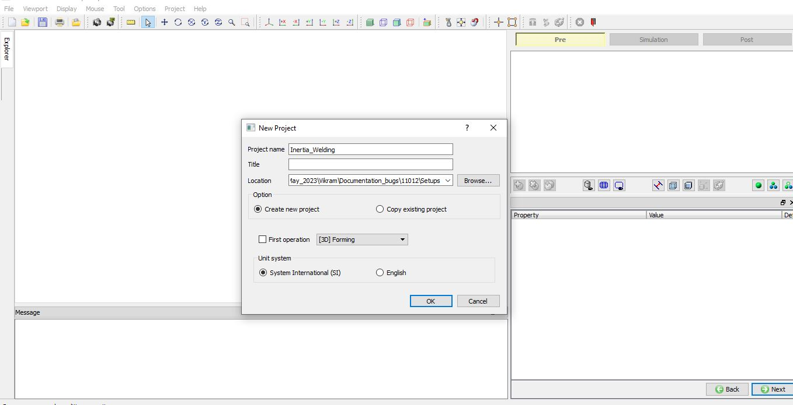
MO Wizard New Project Window.
Add one 2D Forming operation from Explorer Operations list by clicking  button as shown in Fig. 2DINWL1.3. As we add 2D forming operation, Geometry type page will be opened. select geometry type as 2D Torsion as shown in Fig. 2DINWL1.3. and
click
button as shown in Fig. 2DINWL1.3. As we add 2D forming operation, Geometry type page will be opened. select geometry type as 2D Torsion as shown in Fig. 2DINWL1.3. and
click  to Simulation controls page.
to Simulation controls page.
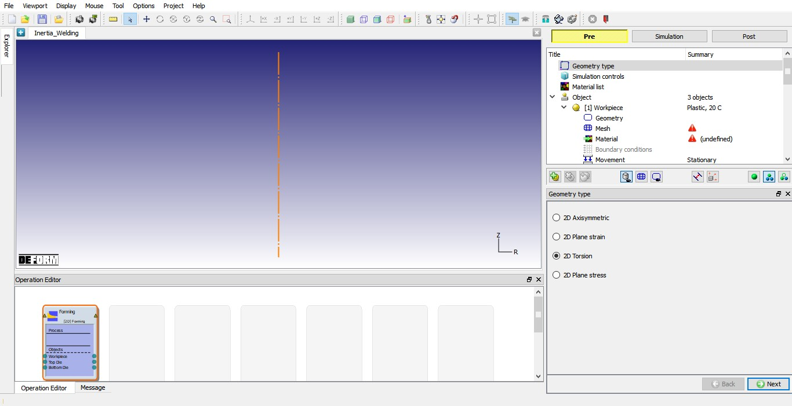
Added 2D Forming operation and Geometry type selection.
In this lab, we will be using both Deformation and Heat transfer hence turn on respective check boxes under Sim Mode in Simulation controls page as shown in Fig. 2DINWL1.4. Click  to Material list page. Click
to Material list page. Click  to Objects page.
to Objects page.
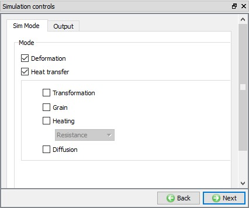
Simulation control settings.
In Material list page, load the material AISI-4340 [1550-2200F(850-1200C)] from library under Steel category using  (Load form library) button.
This can be done as shown in below by clicking
(Load form library) button.
This can be done as shown in below by clicking  button as shown in Fig. 2DINWL1.5.
button as shown in Fig. 2DINWL1.5.
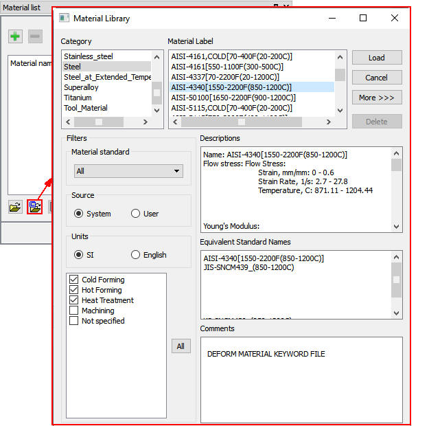
Loading material into Material list page.
We require four objects to setup inertia welding process, there should be three objects added by default for 2D Forming operation, add the fourth object by clicking the  button.
After adding fourth object, the object page should look like as shown in Fig. 2DINWL1.6. Click
button.
After adding fourth object, the object page should look like as shown in Fig. 2DINWL1.6. Click  to Workpiece object page.
to Workpiece object page.
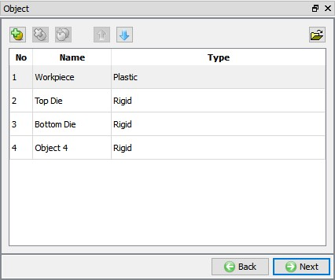
Object Window showing objects for inertia welding.
In Workpiece Object page, change the object name to Punch and object type as Rigid and temperature as 20°C (see Fig. 2DINWL1.7.).
Click  to Geometry page.
to Geometry page.
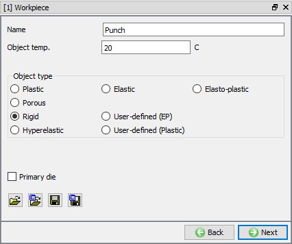
Punch general object definition.
In Geometry page, click on  , select Cylinder from primitives and define Radius as 35.1, Height as
50 as shown in Fig. 2DINWL1.8. Click on
, select Cylinder from primitives and define Radius as 35.1, Height as
50 as shown in Fig. 2DINWL1.8. Click on  button to accept
all the changes and go back to the Geometry definition. Click
button to accept
all the changes and go back to the Geometry definition. Click  until Top Die object page.
until Top Die object page.
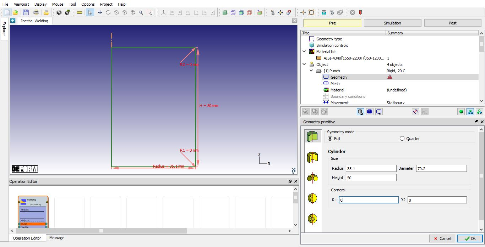
Defining Punch geometry
Change the object name from Top Die to BILLET 2. Keep temperature as 20°C and select the object type as Plastic as shown in Fig. 2DINWL1.9. Click  to Geometry page.
to Geometry page.
BILLET 2 general object definition.
Click the  (Load geometry from a file) button and import the file "BILLET2.geo” geometry file from /2D/LABS/Inertia_Welding. The imported geometry looks like
as shown in Fig. 2DINWL1.10. Click
(Load geometry from a file) button and import the file "BILLET2.geo” geometry file from /2D/LABS/Inertia_Welding. The imported geometry looks like
as shown in Fig. 2DINWL1.10. Click  to Mesh page.
to Mesh page.
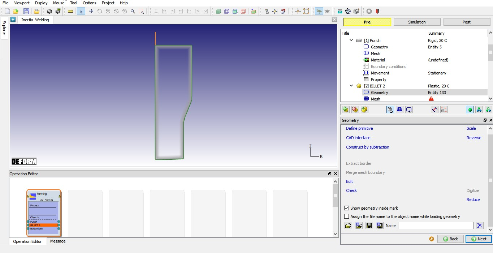
Imported BILLET 2 geometry.
We will generate mesh with mesh windows. To generate mesh with mesh windows we need to be in expert mode, click on  icon to switch to expert mode. In Mesh page General tab, define
Target number of elements as 2000, Thickness elements as 5 and size ratio as 5 (See Fig. 2DINWL1.11.).
icon to switch to expert mode. In Mesh page General tab, define
Target number of elements as 2000, Thickness elements as 5 and size ratio as 5 (See Fig. 2DINWL1.11.).
Under Weighting Factors tab change the Mesh window weighting factor value to approximately 0.8 and Temperature weighing factor as 0.2, see in Fig. 2DINWL1.12.
Now, select Mesh window tab and add three mesh windows to define mesh transition as shown in Fig. 2DINWL1.13., fine mesh at welding region to capture the deformation and temperature and coarse mesh where we do not have much deformation.
- Define Window 1 to cover bottom surface of the BILLET 2 with relative element size 0.033. Define 0.5mm/sec as velocity for Window1.
- Define Window 2 to cover region above Window1 of the BILLET 2 as shown in Fig. 2DINWL1.13. with relative element size 0.1.
- Define Window 3 to cover remaining of the BILLET 2 surface with relative element size 1
Click on Remeshing criteria tab and define Maximum step increment as 50 as shown in Fig. 2DINWL1.14. so that simulation
stops for remeshing after every 50 steps. Click on Advanced setting tab and Define 50 value in X and Y division fields as shown in Fig. 2DINWL1.15. Click on  button to generate the mesh for BILLET 2. The mesh should look like as shown in Fig. 2DINWL1.15. Click
button to generate the mesh for BILLET 2. The mesh should look like as shown in Fig. 2DINWL1.15. Click  to Material page.
to Material page.
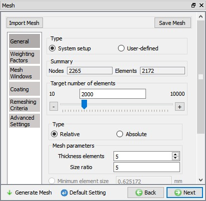
General mesh settings for BILLET 2.
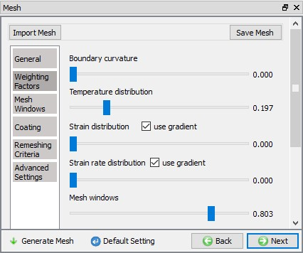
Weighing factors settings for BILLET 2.
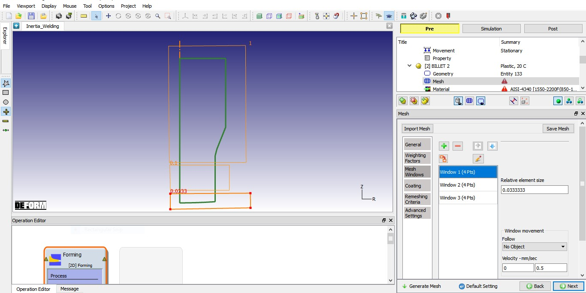
General mesh settings for BILLET 2.
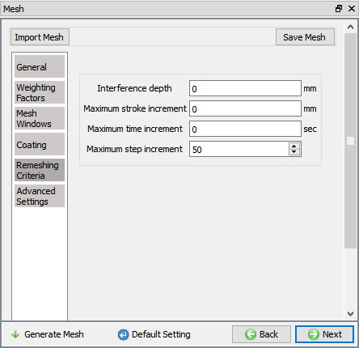
Remeshing criteria settings for BILLET 2.
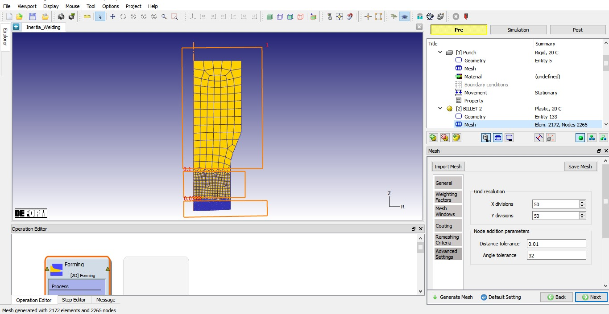
Advanced settings of mesh for BILLET 2 and generated mesh.
Click on the AISI-4340 [1550-2200F(850-1200C)] in the material window to assign the material to BILLET 2 as shown in Fig. 2DINWL1.16. Click  button until Bottom Die object page.
button until Bottom Die object page.
Assigning Material to BILLET 2.
Change the object name from Bottom Die to BILLET 1. Keep object temperature as 20°C and select the object type as Plastic as shown in Fig. 2DINWL1.17. Click  button to Geometry page.
button to Geometry page.
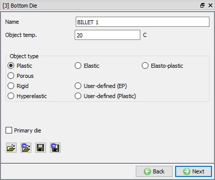
BILLET 1 general object definition.
In Geometry page, click on  (Load geometry from a file) button and import the file "BILLET1.geo” geometry file from /2D/LABS/Inertia_Welding. The imported
geometry looks like as shown in Fig. 2DINWL1.18. Click
(Load geometry from a file) button and import the file "BILLET1.geo” geometry file from /2D/LABS/Inertia_Welding. The imported
geometry looks like as shown in Fig. 2DINWL1.18. Click  to Mesh
page.
to Mesh
page.
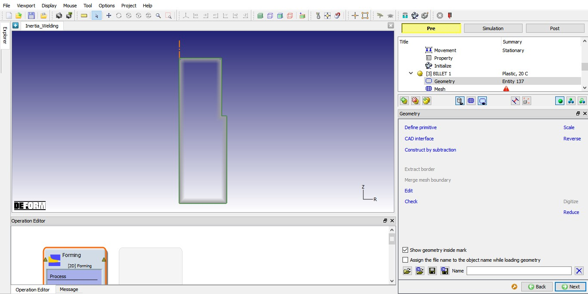
Imported BILLET 1 geometry.
We will generate mesh with mesh windows. In Mesh page General tab, define Target number of elements as 2000, Thickness elements as 5 and size ratio as 5 (See Fig. 2DINWL1.19.).
Under Weighting Factors tab change the Mesh window weighting factor value to approximately 0.8 and Temperature weighing factor as 0.2, see in Fig. 2DINWL1.20.
Now, select Mesh window tab and add three mesh windows to define mesh transition as shown in Fig. 2DINWL1.21, fine mesh at welding region to capture the deformation and temperature and coarse mesh where we do not have much deformation.
- Define Window 1 to cover top surface of the BILLET 1 with relative element size 0.033. Define 0.5mm/sec as velocity for Window1.
- Define Window 2 to cover region below Window1 of the BILLET 1 as shown in Fig. 2DINWL1.21 with relative element size 0.1.
- Define Window 3 to cover remaining of the BILLET 1 surface with relative element size 1.
Click on Remeshing criteria tab and define Maximum step increment as 75 as shown in Fig. 2DINWL1.22 so that simulation
stops for remeshing after every 75 steps. Click on Advanced setting tab and Define 50 value in X and Y division fields as shown in Fig. 2DINWL1.23. Click on  button to generate the mesh for BILLET 1. The mesh should look like as shown in Fig. 2DINWL1.23. Click
button to generate the mesh for BILLET 1. The mesh should look like as shown in Fig. 2DINWL1.23. Click  to Material page.
to Material page.
General mesh settings for BILLET 1.
Weighing factors settings for BILLET 1.
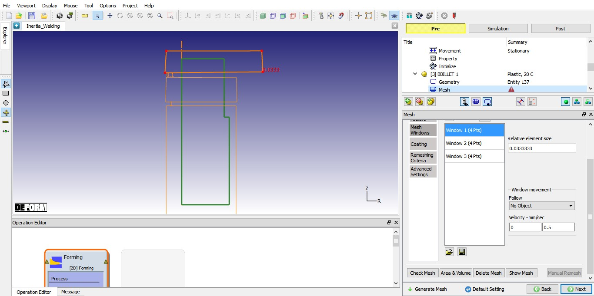
Mesh Window settings for BILLET 1.
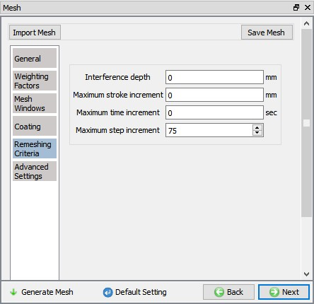
Remeshing criteria settings for BILLET 1.
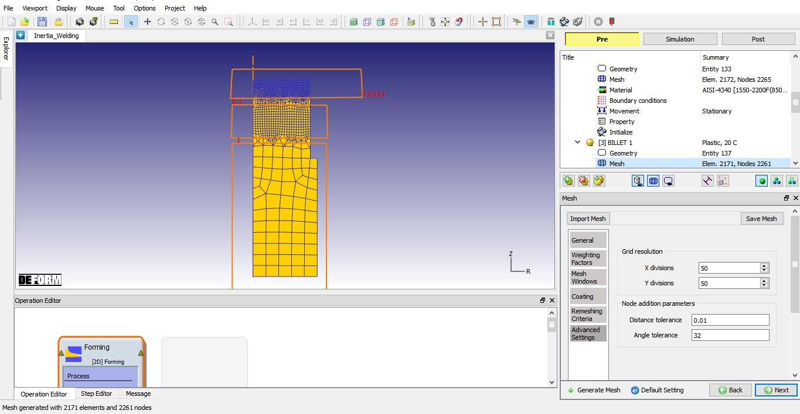
Advanced settings of mesh for BILLET 1 and generated mesh.
Click on the AISI-4340 [1550-2200F(850-1200C)] in the material window to assign the material to BILLET 1 as shown in Fig. 2DINWL1.24. Click  button until Object 4 object page.
button until Object 4 object page.
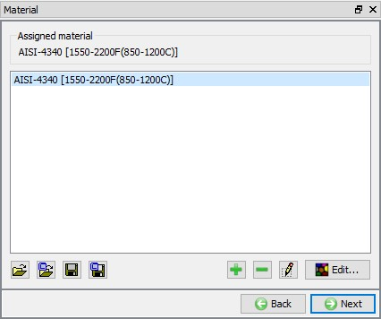
Assigning Material to BILLET 1.
Change the object name from Object 4 to DIE. Keep object temperature as 20°C and select the object type as Rigid as shown in Fig. 2DINWL1.25. Click  to Geometry page.
to Geometry page.
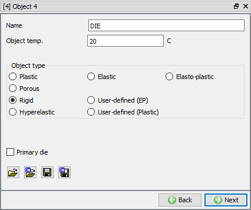
DIE general object definition.
In Geometry page, click on  and select Cylinder from primitives. Define cylinder Radius as 32.6, Height as
50 as shown in Fig. 2DINWL1.26. Click on
and select Cylinder from primitives. Define cylinder Radius as 32.6, Height as
50 as shown in Fig. 2DINWL1.26. Click on  button
to accept all the changes, and go back to the Geometry definition, click on
button
to accept all the changes, and go back to the Geometry definition, click on  until Movement page.
until Movement page.
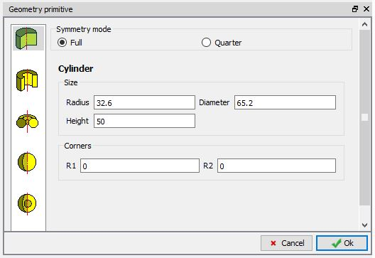
Defining geometry for DIE.
Force will be applied on to the BILLET 1 through DIE. Hence, select Force as movement type and direction as +Y. We will define force as Function of Time, select Function of Time radio button and click on  button as shown in Fig. 2DINWL1.27. Define force as shown in Fig. 2DINWL1.28. Click on
button as shown in Fig. 2DINWL1.27. Define force as shown in Fig. 2DINWL1.28. Click on  button to close the table definition page and click
button to close the table definition page and click  until Positioning page.
until Positioning page.
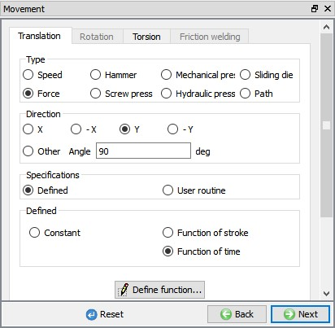
Defining force movement for DIE.
|
Time |
Force |
|
0 |
0 |
|
0.2 |
171000 |
|
2 |
171000 |
|
2.5 |
556600 |
|
80 |
556600 |
|
80.5 |
1164600 |
|
86 |
1164600 |
|
86.5 |
0 |
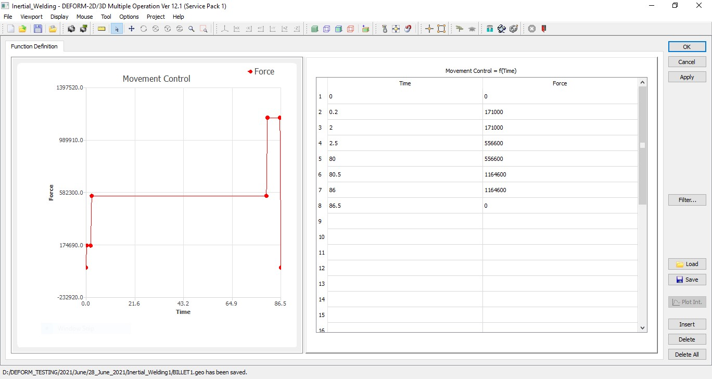
Force movement as function of time for DIE
In Positioning page, click on  label to open Object Positioning window. In Object Positioning window, select Interference option , select Positioning object as Punch and Reference object as BILLET 2, select Approach direction as -Y direction and click on
label to open Object Positioning window. In Object Positioning window, select Interference option , select Positioning object as Punch and Reference object as BILLET 2, select Approach direction as -Y direction and click on  to position Punch above BILLET
2 as shown in Fig. 2DINWL1.29. Similarly, position the DIE (Positioning Object) over the BILLET 1 (Reference Object)
using interference with an approach direction as +Y. Click
to position Punch above BILLET
2 as shown in Fig. 2DINWL1.29. Similarly, position the DIE (Positioning Object) over the BILLET 1 (Reference Object)
using interference with an approach direction as +Y. Click  to accept object positioning and comeback to Positioning page. Objects after positioning looks like as shown in Fig. 2DINWL1.29. Click on
to accept object positioning and comeback to Positioning page. Objects after positioning looks like as shown in Fig. 2DINWL1.29. Click on  until Contact page.
until Contact page.
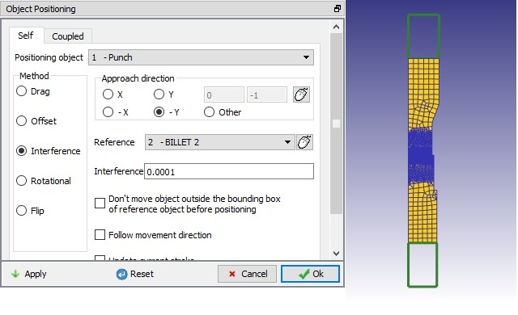
Positioning of the objects: Positioning window
In Contact page, select User as contact type definition and using  button add relations as shown in Fig. 2DINWL1.30.
button add relations as shown in Fig. 2DINWL1.30.
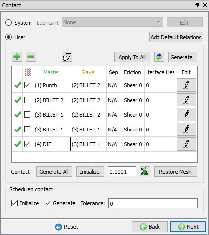
Contact relations between objects.
Select PUNCH – BILLET 2 relationship and click the  button to modify the relationship. In the friction tab, define constant shear friction value 1 as shown in Fig. 2DINWL1.31. Similarly, define constant shear friction of 1 for DIE – BILLET 1 relation.
button to modify the relationship. In the friction tab, define constant shear friction value 1 as shown in Fig. 2DINWL1.31. Similarly, define constant shear friction of 1 for DIE – BILLET 1 relation.
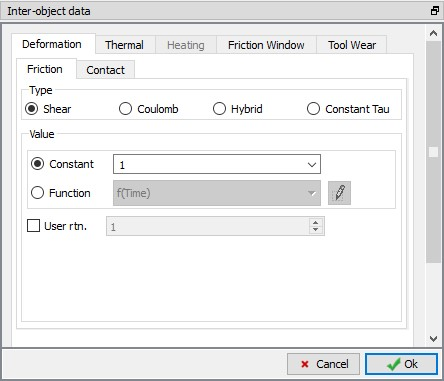
Inter-Object data definition window.
Select BILLET 1– BILLET 2 relationship and click the  button to modify the relationship. Define constant shear friction of 0.9 in Friction tab and HTC as 10
in Thermal tab. Use
button to modify the relationship. Define constant shear friction of 0.9 in Friction tab and HTC as 10
in Thermal tab. Use  icon to determine a suitable contact tolerance then click on
icon to determine a suitable contact tolerance then click on  button to generate
contact. Generated contacts look like as shown in Fig. 2DINWL1.32. Switch to Message tab or Observe status bar to know about
the contacts generated. Click on
button to generate
contact. Generated contacts look like as shown in Fig. 2DINWL1.32. Switch to Message tab or Observe status bar to know about
the contacts generated. Click on  until Step controls page.
until Step controls page.
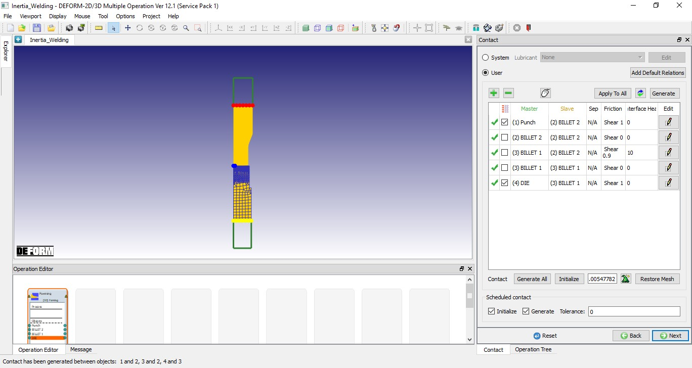
Contact generated between objects.
In Step controls page we have access to expert mode simulation controls as we are in expert mode. Select , define Number of Simulation steps as 2500 and Step Increment to save as 10 as shown in Fig. 2DINWL1.33. and select DIE as Primary die.
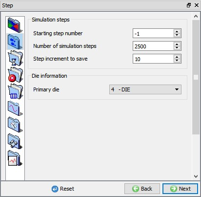
Defining step controls.
Select  , select Time as Solution step definition type and define constant time step as 0.02 Sec/step as shown in
Fig. 2DINWL1.34.
, select Time as Solution step definition type and define constant time step as 0.02 Sec/step as shown in
Fig. 2DINWL1.34.
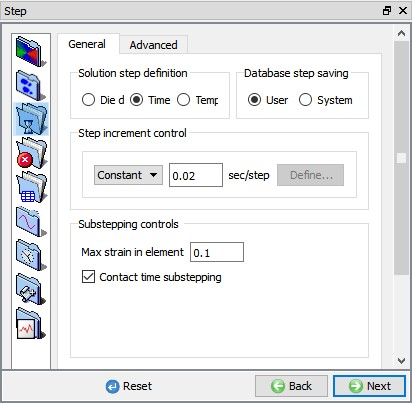
Defining Solution step definition.
Select , in Deformation tab select "Newton-Raphson" as Iteration method and Solver as "Skyline".
Select Advanced tab and Define 350 value in per deformation time step as shown in the Fig. 2DINWL1.35.
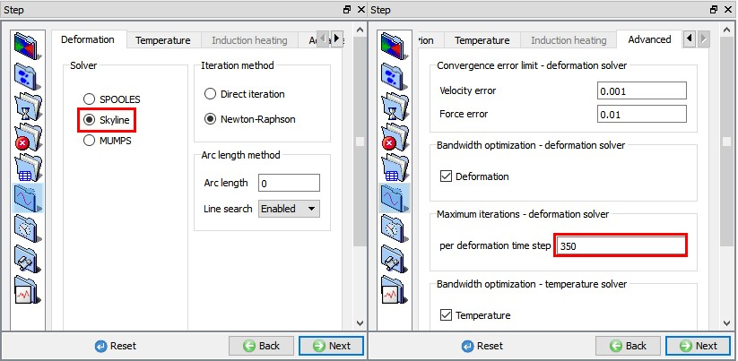
Defining Solver settings.
In Generate Database page, click on  button to have the program check to see if anything was missed in the problem setup. During the checking process,
button to have the program check to see if anything was missed in the problem setup. During the checking process,
messages in the red
color signify data that needs to be fixed before a simulation can be run (such as when you forget to define any material data).
Click on  button to generate the database.
button to generate the database.
Once the database has been generated, switch to the Simulation mode by clicking on  button above the operation tree. Click on the
button above the operation tree. Click on the  action label to open the Run Options dialog as shown in Fig. 2DINWL1.36. Use the default Continue Run option to select
“Continue from the last step” (from step -1) option and then select the Simulation mode as Interactive and click on
action label to open the Run Options dialog as shown in Fig. 2DINWL1.36. Use the default Continue Run option to select
“Continue from the last step” (from step -1) option and then select the Simulation mode as Interactive and click on  button to run the simulation.
button to run the simulation.
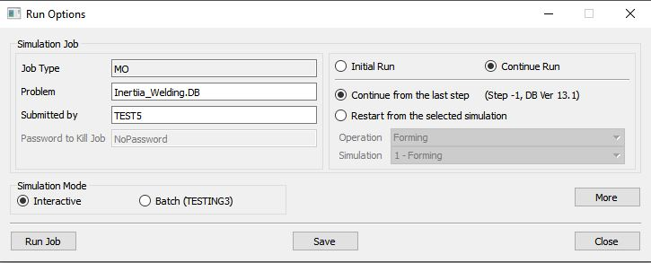
Run Simulation window.
The progress of the simulation can be monitored as it is running by looking at the Simulation Message tab and Simulation Graphics from the Graphics display region in Simulation mode. If  option is checked in Simulation Message tab, which is the default setting, the Message file will refresh automatically.
option is checked in Simulation Message tab, which is the default setting, the Message file will refresh automatically.
The Message file provides information about which simulation step the simulation is currently on and information dealing with how well the simulation is running.